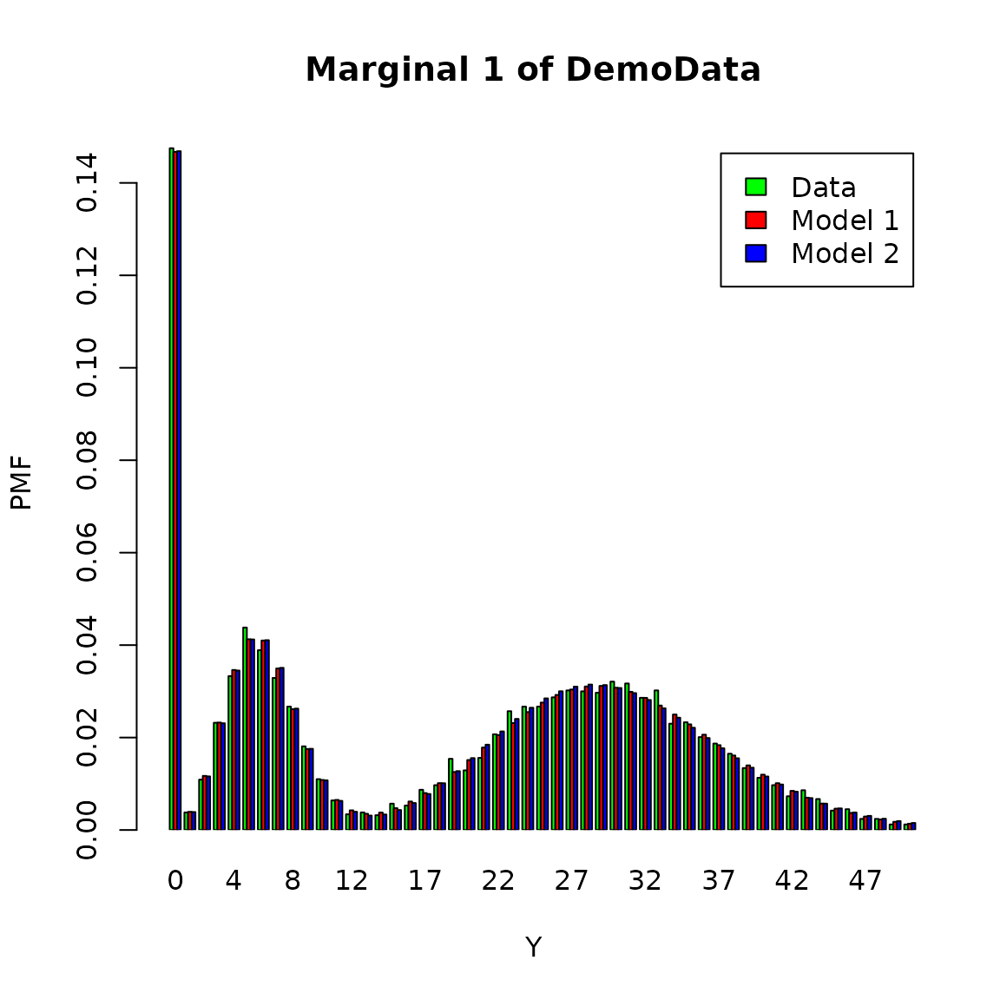
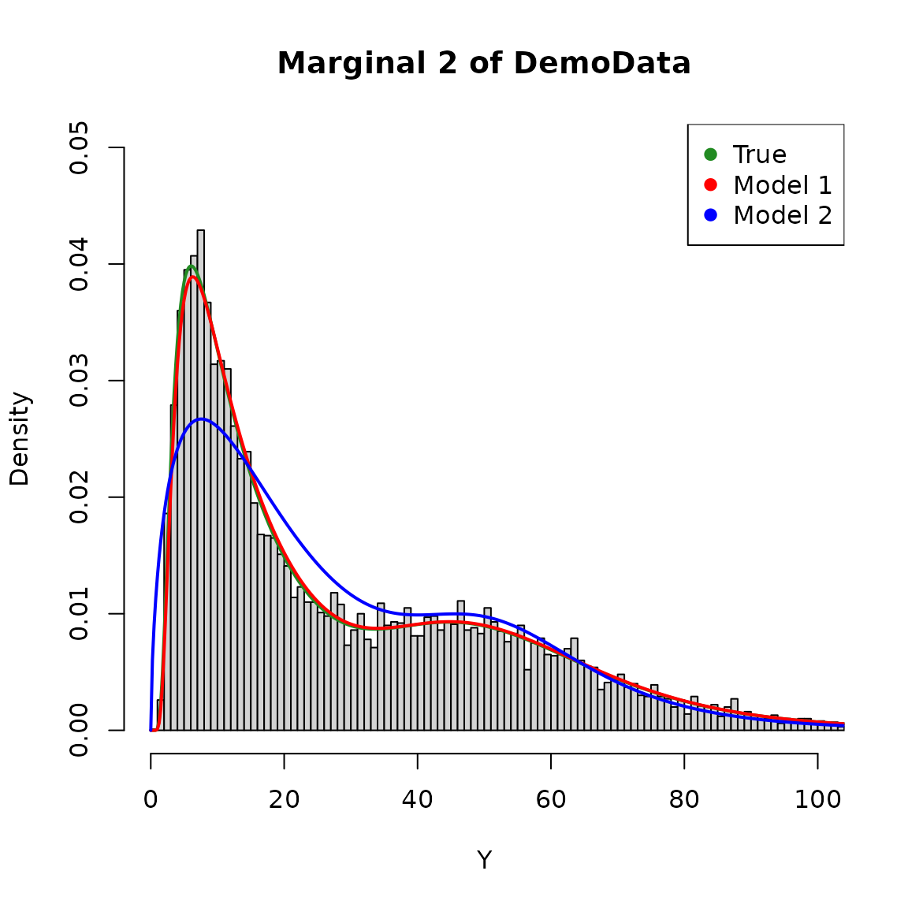
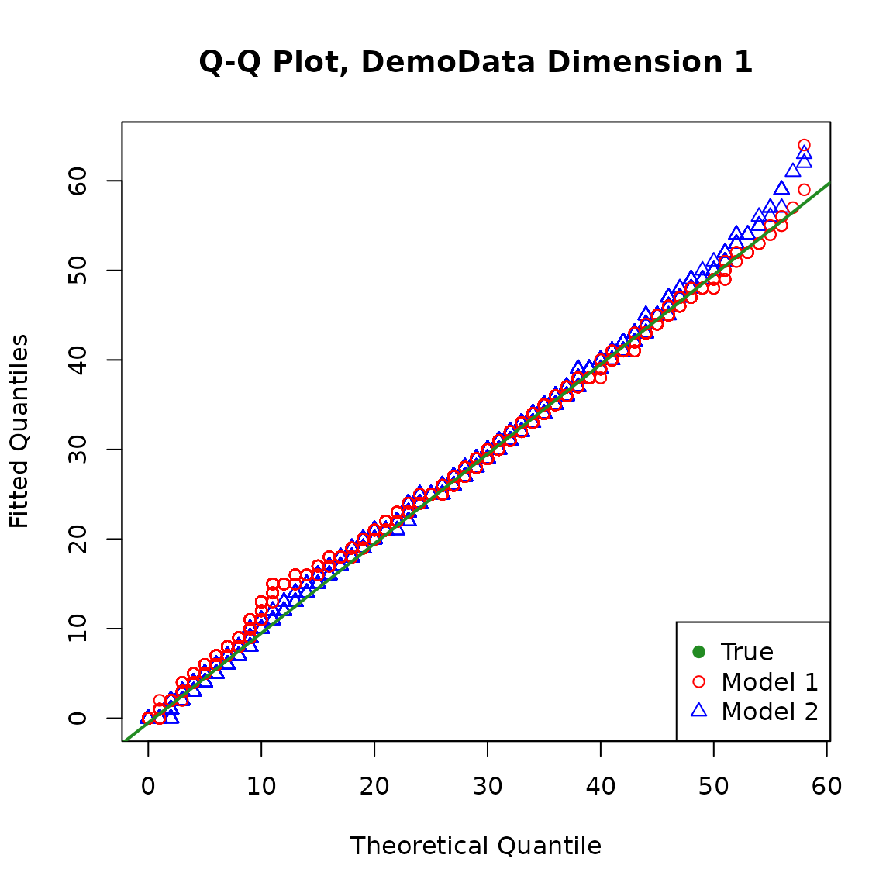
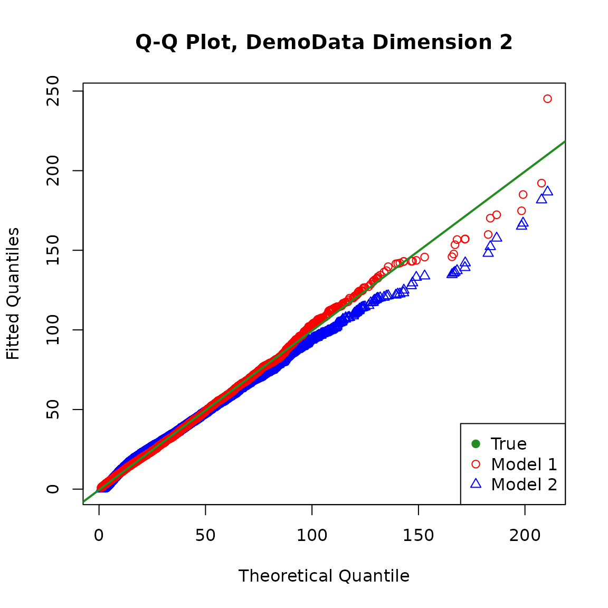

fitsimulatedataset.RmdThis document contains the data fitting process for the dataset LRMoEDemoData included in the LRMoE package. This serves as an example of using the main fitting function FitLRMoE included in the package.
The LRMoEDemoData in the package can be loaded as follows. The data generation process has been described in here.
data("LRMoEDemoData")LRMoE
In this section, we demonstrate how to fit an LRMoE model in the package. In the current version of LRMoE, the minimal inputs required from the user are: response, covariates, number of component distributions to use, specification of component distributions, initial guesses of parameters.
We first start with a correctly specified LRMoE with parameter guesses close to the true ones, which aims to show that the package can identify the true model when the component distributions are correctly given along with reasonable guesses of parameters.
# Number of component distributions; Number of response dimension
n.comp = 2 # = g
dim.m = 2 # = d
# Specify component distributions
# by dimension (row) and by component (column)
# Dimension is d * g
comp_dist = matrix(c("poisson", "zigammacount",
"lognormal", "inversegaussian"),
nrow = dim.m, byrow = TRUE)
# Initial guesses of alpha: logit regression weights
# Dimension is g * P
alpha_init = matrix( c(0, 0, 0, 0, 0,
0, 0, 0, 0, 0),
nrow = n.comp, byrow = TRUE)
# Initial guesses of component distribution parameters
# d-length list, where each elememtn is a g-length list of vectors
params_init = matrix( list(list(lambda = 10), list(p_zero = 0.5, m = 40, s = 0.8),
list(meanlog = 3, sdlog = 1), list(mean = 15, shape = 15)),
nrow = dim.m, byrow = TRUE)Now we are ready to call the fitting function. It is optional to print out intermediate updates of parameters. (Note: The fitting function takes about 15 minutes to run.)
fitted_model = LRMoE::FitLRMoE(Y = Y.obs, X = X.obs,
alpha_init = alpha_init,
comp_dist = comp_dist,
params_list = params_init,
exact_Y = FALSE)The fitting function will return a list of updated parameters, as well as the loglikelihood, Akaike Information Criterion (AIC) and Bayesian Information Criterion (BIC) of the fitted model. We observe that the fitted model is reasonbly close to the true model, considering simulation errors and loss of information due to data truncation and censoring.
# Fitted logit regression weights
fitted_model$alpha_fit## [,1] [,2] [,3] [,4] [,5]
## [1,] -0.5666869 1.048366 -0.0503908 0.1056327 1.266084
## [2,] 0.0000000 0.000000 0.0000000 0.0000000 0.000000
# Fitted parameters of component distributions
print_expert_matrix(fitted_model$model_fit)## [1] "Dimension 1 Component 1 :"
## [1] "poisson : lambda=5.95754926807758"
## [1] "Dimension 1 Component 2 :"
## [1] "zigammacount : p_zero=0.196052813930312; m=29.2440472280268; s=0.493269790215848"
## [1] "Dimension 2 Component 1 :"
## [1] "lognormal : meanlog=4.00361664571559; sdlog=0.297196008443668"
## [1] "Dimension 2 Component 2 :"
## [1] "inversegaussian : mean=20.4013342433473; shape=20.8940698925462"
# Loglikelihood: with and without parameter penalty
fitted_model$ll## [1] -73185.87
fitted_model$ll_np## [1] -73177.56
# AIC
fitted_model$AIC## [1] 146381.1
# BIC
fitted_model$BIC## [1] 146474.6In practice, it is almost impossible to know the true underlying distribution of data. Assume the user has conducted some preliminary analysis, and proposes to use the following LRMoE.
# Number of component distributions; Number of response dimension
n.comp = 2 # = g
dim.m = 2 # = d
# Specify component distributions
comp_guess = matrix(c("zipoisson", "zinegativebinomial",
"burr", "gamma"),
nrow = dim.m, byrow = TRUE)
# Initial guesses of alpha: logit regression weights
alpha_guess = matrix( c(0, 0, 0, 0, 0,
0, 0, 0, 0, 0),
nrow = n.comp, byrow = TRUE)
# Initial guesses of component distribution parameters
params_guess = matrix(list(list(p_zero = 0.5, lambda = 10), list(p_zero = 0.5, n = 25, p = 0.4),
list(shape1 = 5, shape2 = 2, scale = 30), list(shape = 1, scale = 10)),
nrow = dim.m, byrow = TRUE)The fitting function can be called similarly. (Note: The fitting function takes about 15 minutes to run, mostly due to numerical integration and optimization of the Burr component.)
fitted_model_new = LRMoE::FitLRMoE(Y = Y.obs, X = X.obs,
alpha_init = alpha_guess,
comp_dist = comp_guess,
params_list = params_guess,
exact_Y = FALSE)We can also examine the mis-specified model. Judging from the loglikelihood, it provides relatively worse fit to data compared with the true model.
# Fitted logit regression weights
fitted_model_new$alpha_fit## [,1] [,2] [,3] [,4] [,5]
## [1,] -0.5396191 1.042177 -0.05026247 0.1057345 1.266994
## [2,] 0.0000000 0.000000 0.00000000 0.0000000 0.000000
# Fitted parameters of component distributions
print_expert_matrix(fitted_model_new$model_fit)## [1] "Dimension 1 Component 1 :"
## [1] "zipoisson : p_zero=0.0151523936573011; lambda=5.97506249087493"
## [1] "Dimension 1 Component 2 :"
## [1] "zinegativebinomial : p_zero=0.192140355195741; n=30.1999977021988; p=0.503479897629853"
## [1] "Dimension 2 Component 1 :"
## [1] "burr : shape1=1.01476951770362; shape2=5.7579625863322; scale=55.1624200894894"
## [1] "Dimension 2 Component 2 :"
## [1] "gamma : shape=1.60656085137562; scale=12.4849575759799"
# Loglikelihood: with and without parameter penalty
fitted_model_new$ll## [1] -73718.28
fitted_model_new$ll_np## [1] -73714.51
# AIC
fitted_model_new$AIC## [1] 147459
# BIC
fitted_model_new$BIC## [1] 147566.9While loglikelihood can indicate to some extent the goodness-of-fit of the two models above, one may wish to visualize the models.
Model visualization in the presence of data censoring and truncation is somewhat delicate: for example, when plotting a histogram or QQ-plot, how does one represent censored data? One solution is to simply discard those censored data points when plotting. Since we have the complete dataset at hand, we will make use of it and plot all 10,000 data points, although the model is only fitted based on a (slightly smaller) subset.
The fitted distribution by dimension against similated dataset are shown as follows.


We can also obtain the QQ plot of the fitted models against the true model. For the fitted models, the distribution of the response variable for the population is a mixture of \(n\) policyholder’s individual distribution with weight \(1/n\) assigned to each.
It is straightforward to calculate the exact cumulative distribution function (CDF) of the fitted distribution for the population at selected points, but it may be quite computationally intensive and unstable to invert it to obtain the quantiles when the sample size is large.
For simplicity, we simulate from the fitted distribution and make the plots. Note that different random seeds may produce slightly different plots, and a larger simulation size may make the plots more stable.

